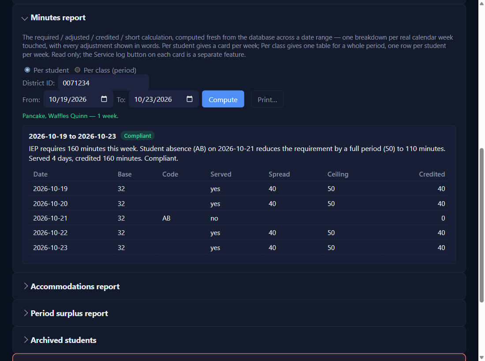
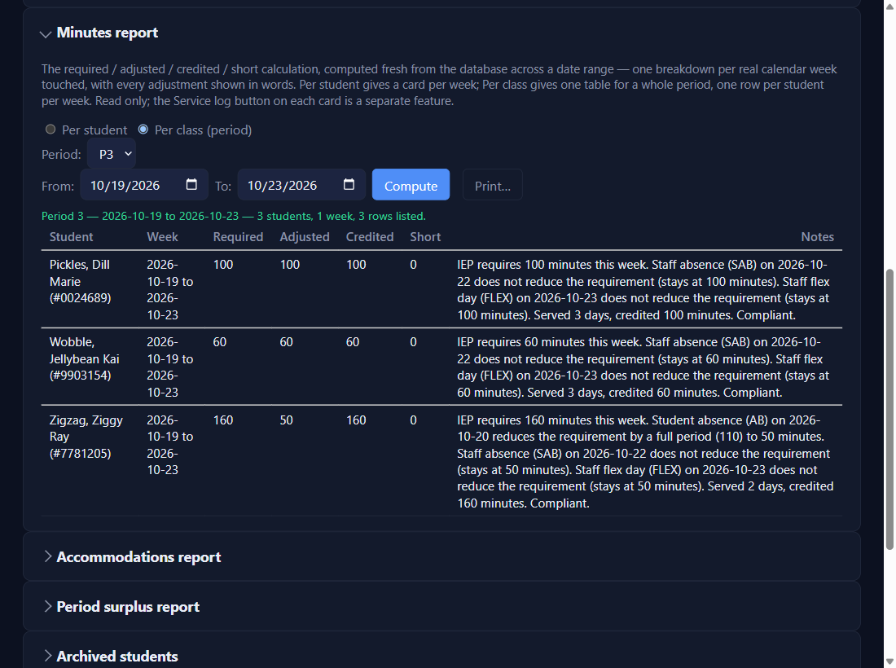

The Minutes report
Settings → Minutes report → Per student
Click in District ID and pick the student from the list (type part of a name). Pick From and To, then Compute.

Read each week
One card per school week, with a badge: Compliant, Short by …, or Provisional — week not finished while a day is still unlogged. The sentence underneath says why, and a table shows each day. Here Waffles was absent Wednesday, so the 160 minutes owed drop by a full 50-minute period to 110.
| Each week | What it means |
|---|---|
| Required | The weekly IEP minutes, for the days the student was enrolled |
| AdjustedNEWfor version 0.4.21 and beyond | Required, minus each coded day. A student code (AB, O, S) takes off a full period (the bell schedule's length that day), never below 0. SUB and ARD take off that day's share. SAB and FLEX take off nothing. |
| Credited | The minutes printed in column B: spread over the days served, never more than the period's length in a day |
| Short | Credited is less than Adjusted |
A whole class at once: Per class (period)
Pick the period and the range, then Compute: one table, one row per student per week. A short week is shaded, and Notes says why. Here the whole class had a staff-absent day and a flex day, which lower nothing; Ziggy was also absent Tuesday, which lowered his week by a full 110-minute period.

Print it, or save it as a PDFNEWfor version 0.4.21 and beyond
Print… sits beside Compute. It's greyed until Compute shows a result, and greys again if you change a choice (period, student, a date) until you Compute again, so the printout always matches its heading. Click it and the Windows print dialog opens: pick a printer, or Microsoft Print to PDF to save a PDF for an ARD folder. The printout is just the report, headed with its name, your choices, and when it was printed. Nothing is saved.
✓ You'll know it worked
- A card per week (per student), or a table with a line saying how many students, weeks, and rows it listed (per class).
- Print… works once the report is on screen.
✕ Avoid these
- Reading too much into a provisional week. It changes as you log the rest of it.
- SAB or FLEX for anything else. They leave the minutes owed, so the week reads short.
⚠ If you see this
District ID, a start date, and an end date are all required.Fill in the missing box and Compute again.
No in-session dates this week fall inside the student's enrollment window — nothing is owed.A break week, or a week the student wasn't enrolled. Nothing to do.